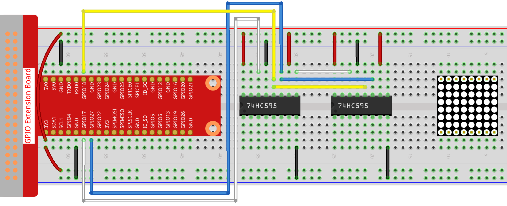

Note
Bonjour, bienvenue dans la communauté SunFounder Raspberry Pi & Arduino & ESP32 Enthusiasts sur Facebook ! Plongez dans l’univers du Raspberry Pi, Arduino et ESP32 avec d’autres passionnés.
Pourquoi nous rejoindre ?
Support d’experts : Résolvez vos problèmes après-vente et relevez les défis techniques grâce à l’aide de notre communauté et de notre équipe.
Apprendre & Partager : Échangez des astuces et des tutoriels pour améliorer vos compétences.
Avant-premières exclusives : Profitez d’un accès anticipé aux annonces de nouveaux produits et aux aperçus.
Réductions spéciales : Bénéficiez de réductions exclusives sur nos dernières nouveautés.
Promotions festives et cadeaux : Participez à des promotions spéciales et des tirages au sort lors des fêtes.
üëâ Pr√™t √† explorer et cr√©er avec nous ? Cliquez sur [Ici] pour nous rejoindre d√®s aujourd‚Äôhui !
1.1.6 Matrice de LED
Introduction
Comme son nom l’indique, une matrice de LED est une grille composée de LED. L’allumage et l’extinction des LED permettent de former différents caractères et motifs.
Composants requis
Dans ce projet, nous avons besoin des composants suivants.

Principe de fonctionnement
Matrice de LED
En général, les matrices de LED se divisent en deux types : cathode commune (CC) et anode commune (CA). Elles se ressemblent, mais présentent des différences internes. Vous pouvez les différencier par un test. Nous utilisons ici un modèle CA, marqué « 788BS » sur le côté.
Consultez la figure ci-dessous. Les broches sont disposées aux deux extrémités de l’arrière. Prenez le côté marqué comme référence : les broches de cette extrémité sont numérotées de 1 à 8, et celles de l’autre extrémité de 9 à 16.
Vue externe :

Les schémas ci-dessous montrent leur structure interne. Dans une matrice CA, ROW représente l’anode de la LED, et COL la cathode ; l’inverse est vrai pour un modèle CC. Quel que soit le type, les broches 13, 3, 4, 10, 6, 11, 15 et 16 correspondent aux COL, tandis que les broches 9, 14, 8, 12, 1, 7, 2 et 5 correspondent aux ROW. Pour allumer la première LED en haut à gauche, dans une matrice CA, mettez la broche 9 en High et la broche 13 en Low. Dans une matrice CC, faites l’inverse : mettez la broche 13 en High et la broche 9 en Low. Pour allumer toute la première colonne, dans une matrice CA, mettez la broche 13 en Low et les broches ROW (9, 14, 8, 12, 1, 7, 2, 5) en High ; pour une matrice CC, faites l’inverse.
Schéma interne :

Numérotation des broches correspondant aux rangées et colonnes ci-dessus :
COL |
1 |
2 |
3 |
4 |
5 |
6 |
7 |
8 |
Pin No. |
13 |
3 |
4 |
10 |
6 |
11 |
15 |
16 |
ROW |
1 |
2 |
3 |
4 |
5 |
6 |
7 |
8 |
Pin No. |
9 |
14 |
8 |
12 |
1 |
7 |
2 |
5 |
De plus, deux circuits intégrés 74HC595 sont utilisés ici : l’un pour contrôler les rangées de la matrice de LED, et l’autre pour les colonnes.
Schéma de câblage
T-Board Name |
physical |
wiringPi |
BCM |
GPIO17 |
Pin 11 |
0 |
17 |
GPIO18 |
Pin 12 |
1 |
18 |
GPIO27 |
Pin 13 |
2 |
27 |

Procédure expérimentale
Étape 1 : Construire le circuit. Comme le câblage est complexe, procédons étape par étape. Insérez d’abord le T-Cobbler, la matrice de LED et les deux circuits 74HC595 dans la plaque de montage. Connectez le 3.3V et le GND du T-Cobbler aux trous situés de chaque côté de la plaque, puis reliez la broche 16 et la broche 10 des deux 74HC595 au VCC, et les broches 13 et 8 au GND.
Note
Dans l’image Fritzing ci-dessus, le côté marqué est en bas.

Étape 2 : Connectez la broche 11 des deux 74HC595 ensemble, puis au GPIO27 ; ensuite, la broche 12 des deux circuits, au GPIO18 ; et enfin, la broche 14 du 74HC595 de gauche au GPIO17 et la broche 9 à la broche 14 du deuxième 74HC595.
{kind=link}
Étape 3 : Le 74HC595 à droite contrôle les colonnes de la matrice de LED. Consultez le tableau ci-dessous pour le mappage. Les broches Q0-Q7 du 74HC595 correspondent respectivement aux broches 13, 3, 4, 10, 6, 11, 15 et 16 de la matrice de LED.
74HC595 |
Q0 |
Q1 |
Q2 |
Q3 |
Q4 |
Q5 |
Q6 |
Q7 |
LED Dot Matrix |
13 |
3 |
4 |
10 |
6 |
11 |
15 |
16 |

Étape 4 : Connectez maintenant les ROW de la matrice de LED. Le 74HC595 de gauche contrôle les rangées de la matrice. Consultez le tableau ci-dessous pour le mappage. Les broches Q0-Q7 du 74HC595 correspondent respectivement aux broches 9, 14, 8, 12, 1, 7, 2 et 5 de la matrice de LED.
74HC595 |
Q0 |
Q1 |
Q2 |
Q3 |
Q4 |
Q5 |
Q6 |
Q7 |
LED Dot Matrix |
9 |
14 |
8 |
12 |
1 |
7 |
2 |
5 |

Étape 5 : Ouvrir le fichier de code.
cd ~/davinci-kit-for-raspberry-pi/python-pi5
Étape 6 : Exécuter le code.
sudo python3 1.1.6_led_dot_matrix.py
Après l’exécution du code, la matrice de LED s’allumera et s’éteindra ligne par ligne et colonne par colonne.
Avertissement
Si un message d’erreur tel que RuntimeError: Cannot determine SOC peripheral base address s’affiche, veuillez vous référer à Si gpiozero ne fonctionne pas..
Code
Note
Vous pouvez modifier/réinitialiser/copier/exécuter/arrêter le code ci-dessous. Mais avant cela, vous devez vous rendre dans le répertoire source tel que davinci-kit-for-raspberry-pi/python-pi5. Après avoir modifié le code, vous pouvez l’exécuter directement pour observer les effets.
#!/usr/bin/env python3
from gpiozero import OutputDevice
from time import sleep
# Définir les broches GPIO connectées au registre à décalage 74HC595
SDI = OutputDevice(17) # Entrée de données série
RCLK = OutputDevice(18) # Horloge de registre
SRCLK = OutputDevice(27) # Horloge de décalage
# Définir les motifs d'affichage de la matrice ; ROWs sont les anodes (+), COLs sont les cathodes (-)
# Modèle pour les rangées (signaux d'anode)
code_H = [0x01, 0xff, 0x80, 0xff, 0x01, 0x02, 0x04, 0x08, 0x10, 0x20, 0x40, 0x80, 0xff, 0xff, 0xff, 0xff, 0xff, 0xff, 0xff, 0xff]
# Modèle pour les colonnes (signaux de cathode)
code_L = [0x00, 0x7f, 0x00, 0xfe, 0x00, 0x00, 0x00, 0x00, 0x00, 0x00, 0x00, 0x00, 0xfe, 0xfd, 0xfb, 0xf7, 0xef, 0xdf, 0xbf, 0x7f]
# Décalage de données vers le 74HC595
def hc595_shift(dat):
""" Shift data to the 74HC595 shift register for displaying on the matrix. """
for i in range(8):
# Régler la valeur de SDI et déclencher l'horloge de décalage
SDI.value = 0x80 & (dat << i)
SRCLK.on()
SRCLK.off()
# Déclencher l'horloge de registre pour mettre à jour l'affichage
RCLK.on()
sleep(0.001)
RCLK.off()
def main():
""" Main loop for cycling through display patterns. """
while True:
# Parcourir les motifs dans l'ordre croissant
for i in range(len(code_H)):
hc595_shift(code_L[i])
hc595_shift(code_H[i])
sleep(0.1)
# Parcourir les motifs dans l'ordre décroissant
for i in range(len(code_H)-1, -1, -1):
hc595_shift(code_L[i])
hc595_shift(code_H[i])
sleep(0.1)
# Exécuter la boucle principale, gérer l'interruption du clavier proprement
try:
main()
except KeyboardInterrupt:
pass
Explication du Code
Cet extrait de code importe les classes nécessaires pour le projet.
OutputDevicede la bibliothèquegpiozeroest utilisé pour contrôler les composants matériels connectés aux broches GPIO, etsleepde la bibliothèquetimeest utilisé pour ajouter des délais.#!/usr/bin/env python3 from gpiozero import OutputDevice from time import sleep
Cette section initialise les broches GPIO connectées au registre à décalage 74HC595.
SDIcorrespond à l’entrée de données série,RCLKest l’horloge de registre, etSRCLKest l’horloge de décalage. Ces broches sont utilisées pour insérer les données dans le registre et contrôler l’affichage de la matrice LED.# Définir les broches GPIO connectées au registre à décalage 74HC595 SDI = OutputDevice(17) # Entrée de données série RCLK = OutputDevice(18) # Horloge de registre SRCLK = OutputDevice(27) # Horloge de décalage
code_Hetcode_Ldéfinissent les motifs binaires pour contrôler respectivement les rangées (anodes) et les colonnes (cathodes) de la matrice LED. Chaque élément de ces tableaux représente un motif binaire qui contrôle quels LED doivent être allumés ou éteints dans la matrice.# Définir les motifs d'affichage pour la matrice ; ROWs sont les anodes (+), COLs sont les cathodes (-) # Motif pour les rangées (signaux d'anode) code_H = [0x01, 0xff, 0x80, 0xff, 0x01, 0x02, 0x04, 0x08, 0x10, 0x20, 0x40, 0x80, 0xff, 0xff, 0xff, 0xff, 0xff, 0xff, 0xff, 0xff] # Motif pour les colonnes (signaux de cathode) code_L = [0x00, 0x7f, 0x00, 0xfe, 0x00, 0x00, 0x00, 0x00, 0x00, 0x00, 0x00, 0x00, 0xfe, 0xfd, 0xfb, 0xf7, 0xef, 0xdf, 0xbf, 0x7f]
Cette fonction déplace un octet de données (
dat) dans le registre à décalage 74HC595. Elle parcourt chaque bit de l’octet, définit la brocheSDIsur haut ou bas en fonction de la valeur du bit, et bascule la brocheSRCLKpour insérer le bit dans le registre. Après avoir inséré tous les bits, elle bascule la brocheRCLKpour mettre à jour l’affichage de la matrice LED.# Déplacer les données vers le 74HC595 def hc595_shift(dat): """ Shift data to the 74HC595 shift register for displaying on the matrix. """ for i in range(8): # Régler la valeur de SDI et déclencher l'horloge de décalage SDI.value = 0x80 & (dat << i) SRCLK.on() SRCLK.off() # Déclencher l'horloge de registre pour mettre à jour l'affichage RCLK.on() sleep(0.001) RCLK.off()
La fonction principale contient une boucle infinie qui parcourt les motifs prédéfinis de la matrice LED. Elle utilise la fonction
hc595_shiftpour envoyer les motifs de rangées et de colonnes (code_Hetcode_L) au registre à décalage, d’abord dans l’ordre croissant, puis dans l’ordre décroissant, créant ainsi un affichage dynamique.def main(): """ Main loop for cycling through display patterns. """ while True: # Parcourir les motifs dans l'ordre croissant for i in range(len(code_H)): hc595_shift(code_L[i]) hc595_shift(code_H[i]) sleep(0.1) # Parcourir les motifs dans l'ordre décroissant for i in range(len(code_H)-1, -1, -1): hc595_shift(code_L[i]) hc595_shift(code_H[i]) sleep(0.1)
Ce segment garantit que le programme peut être interrompu à l’aide d’une interruption clavier (Ctrl+C). Il quitte proprement la boucle principale sans arrêt brusque ni fuite de ressources.
# Exécuter la boucle principale, gérer l'interruption clavier proprement try: main() except KeyboardInterrupt: pass